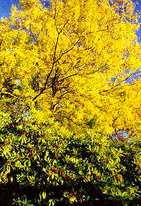
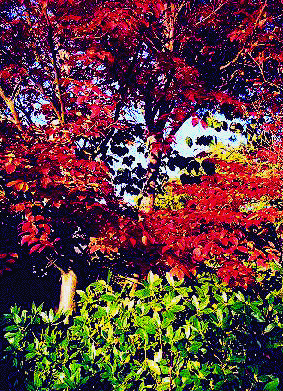
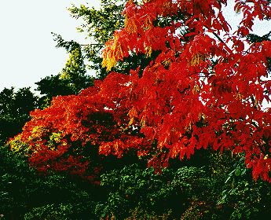

Introduction History Spring Tour Other Seasons Companion Plants Fruit/Veg/Berries Work Family Links ARS VISITING THE GARDEN DESIGN ELEMENTS SPECIMENS TIPS GARDEN FURNITURE Winter Spring Tour Summer Fall
More Fall Companions Fall Color in Rhododendrons Azaleas in Fall Fall Japanese Maples Fall Mushrooms Fall Color in Rhododendron Companions Honey Locust in October


Stewartia and rhododendrons Oxydendrum shows fall color and flowers
More Fall Companions Fall Color in Rhododendrons Azaleas in Fall Fall Japanese Maples Fall MushroomsIntroduction History Spring Tour Other Seasons Companion Plants Fruit/Veg/Berries Work Family Links ARS VISITING THE GARDEN DESIGN ELEMENTS SPECIMENS TIPS GARDEN FURNITURE
© 2001 by John and Doreen Anderson